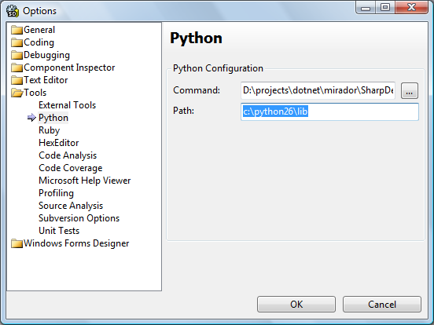
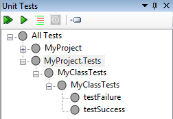
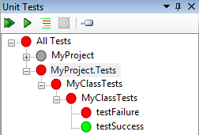
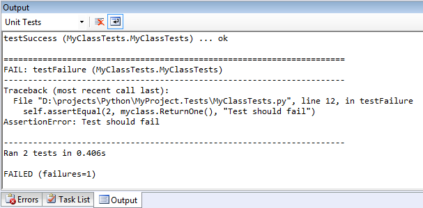
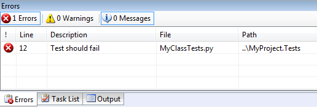

SharpDevelop 4 has been updated to support unit testing with IronPython.
First you will need to install Python 2.6. SharpDevelop uses the standard Python unit test library (unittest.py) to run the unit tests.
SharpDevelop should detect where the Python standard library is installed but if it does not then you can either specify the path to the standard library via the IRONPYTHONPATH environment variable or you can set the path in the Options dialog (Tools | Options | Tools | Python | Path), as shown below.

Now we need to create some tests. Create two Python projects one to hold the unit tests and the other to hold the code that will be tested.
In the test project we add the following simple test class that has two tests, one that will work and one that will fail.
import unittest import MyClass class MyClassTests(unittest.TestCase): def testSuccess(self): myclass = MyClass.MyClass() self.assertEqual(1, myclass.ReturnOne(), "Test should work") def testFailure(self): myclass = MyClass.MyClass() self.assertEqual(2, myclass.ReturnOne(), "Test should fail")
Once this class is created you should see the unit tests displayed in the Unit Tests window (View | Tools | Unit Tests).

In the other project we create a new class with the following code.
class MyClass: def __init__(self): pass def ReturnOne(self): return 1
Now in the project containing the unit tests we need to add a project reference to the project containing MyClass. This is so that SharpDevelop knows to set up the paths correctly so MyClass can be found when the unit tests are run.
Once the project reference is added the unit tests can be run in the normal way by right clicking in the Unit Tests window and selecting Run tests. You can run all the tests in a project, all tests in a class or a single test method.

The output generated when running the unit tests is shown in the Output window.

Test failures are displayed in the Errors window. Clicking an error will open the corresponding code in the editor.

You cannot debug your unit tests at the moment since debugging IronPython code is not currently working in SharpDevelop 4.0. Running unit tests with code coverage is also not supported.